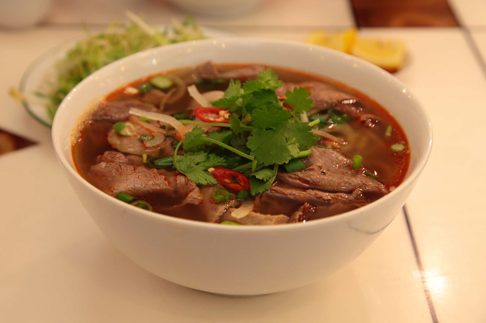
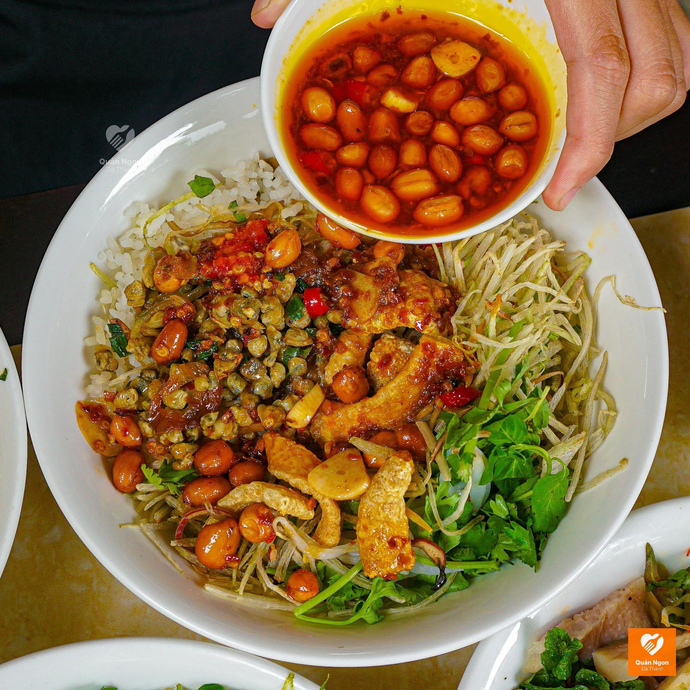
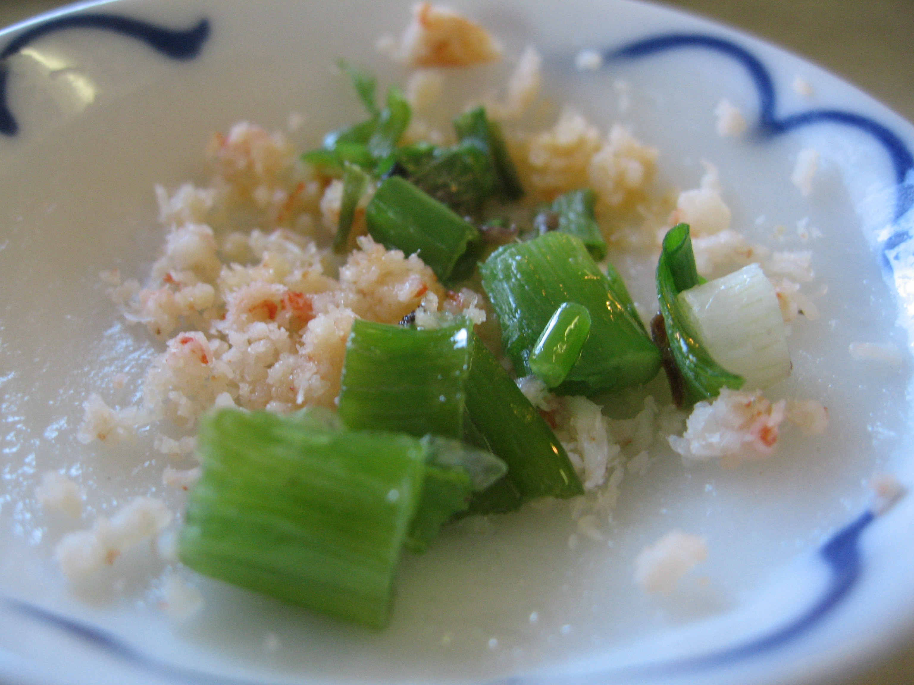

Popular Hue Dishes
- Bun Bo Hue
- Com Hen
- Banh Beo
Food Gallery



About Hue Cuisine
Hue cuisine is one of the most famous cuisines in Vietnam. It is known for its rich flavors and beautiful presentation. Many dishes come from the royal traditions of Hue.
To learn more about Hue and its culture, visit Vietnam Travel .